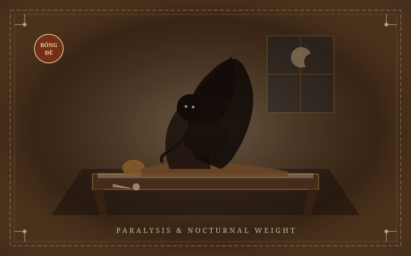

Folklore & Neurobiology
Hiện Tượng Bóng Đè
Sleep Paralysis (Bóng Đè)
In Vietnamese folk culture, waking up unable to move while sensing a suffocating presence on one's chest has long been attributed to 'Bóng Đè'—an unseen entity or restless shadow spirit pinning the sleeper down.